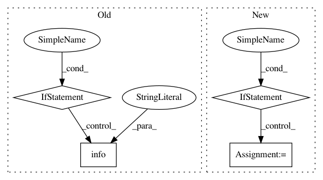

2de52a8976971da4836727ba9242fedcc7474878,src/sdk/pynni/nni/compression/torch/compressor.py,Pruner,export_model,#Pruner#Any#Any#Any#Any#,213
Before Change
if name == "":
continue
masks = self.mask_dict.get(name)
if masks is not None:
mask_sum = masks["weight"].sum().item()
mask_num = masks["weight"].numel()
_logger.info("Layer: %s Sparsity: %.2f", name, 1 - mask_sum / mask_num)
m.weight.data = m.weight.data.mul(masks["weight"])
if masks.__contains__("bias") and hasattr(m, "bias") and m.bias is not None:
m.bias.data = m.bias.data.mul(masks["bias"])
else:
_logger.info("Layer: %s NOT compressed", name)
torch.save(self.bound_model.state_dict(), model_path)
_logger.info("Model state_dict saved to %s", model_path)
if mask_path is not None:
torch.save(self.mask_dict, mask_path)
After Change
mask_num = weight_mask.numel()
_logger.info("Layer: %s Sparsity: %.2f", wrapper.name, 1 - mask_sum / mask_num)
wrapper.module.weight.data = wrapper.module.weight.data.mul(weight_mask)
if bias_mask is not None:
wrapper.module.bias.data = wrapper.module.bias.data.mul(bias_mask)
// save mask to dict
mask_dict[wrapper.name] = {"weight": weight_mask, "bias": bias_mask}
torch.save(self.bound_model.state_dict(), model_path)
_logger.info("Model state_dict saved to %s", model_path)
In pattern: SUPERPATTERN
Frequency: 3
Non-data size: 4
Instances
Project Name: microsoft/nni
Commit Name: 2de52a8976971da4836727ba9242fedcc7474878
Time: 2020-01-16
Author: 656569648@qq.com
File Name: src/sdk/pynni/nni/compression/torch/compressor.py
Class Name: Pruner
Method Name: export_model
Project Name: ray-project/ray
Commit Name: 0d36e4c025e7c8f208c126709a33730aef1c3600
Time: 2020-09-28
Author: ameerh@berkeley.edu
File Name: python/ray/autoscaler/_private/resource_demand_scheduler.py
Class Name: ResourceDemandScheduler
Method Name: get_nodes_to_launch
Project Name: deepmipt/DeepPavlov
Commit Name: 2e530e78c78c3f9f899143c437f55618d3038951
Time: 2018-02-18
Author: arkhipov@yahoo.com
File Name: deeppavlov/core/models/tf_model.py
Class Name: TFModel
Method Name: load